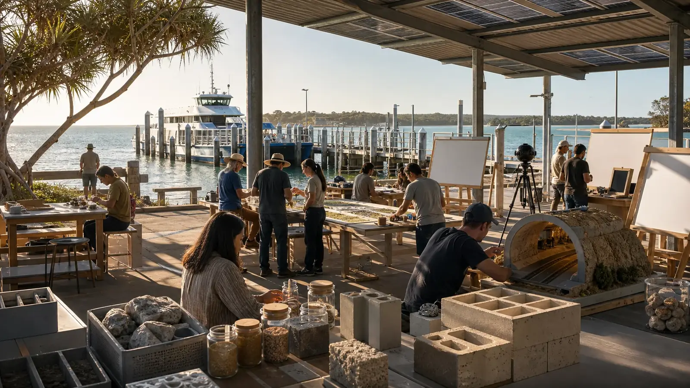

Already real, live now
The evidence, on the ground
Known
Before anyone claims anything, photograph the place. Seventy-seven real, mapped 360° panoramas of Dunwich (Gumpi) are already public across two open data labs: the seed of the island's digital twin, captured by hand.